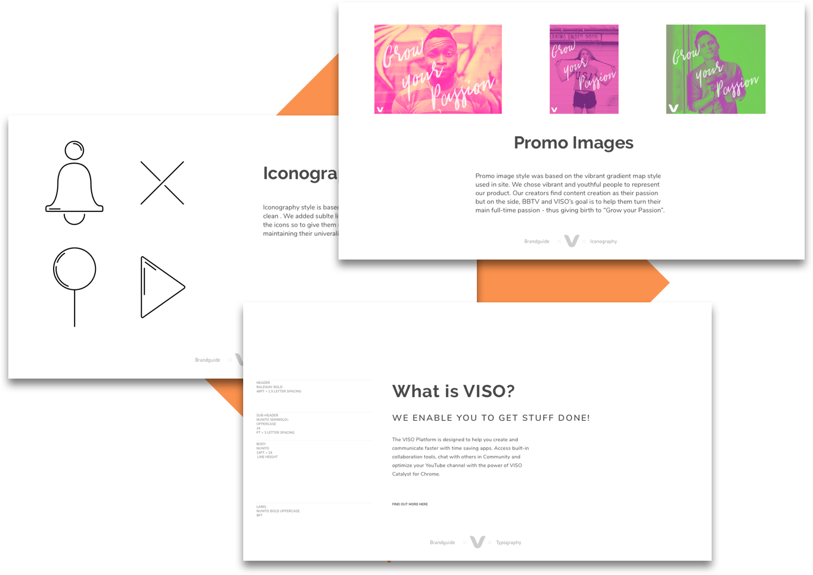
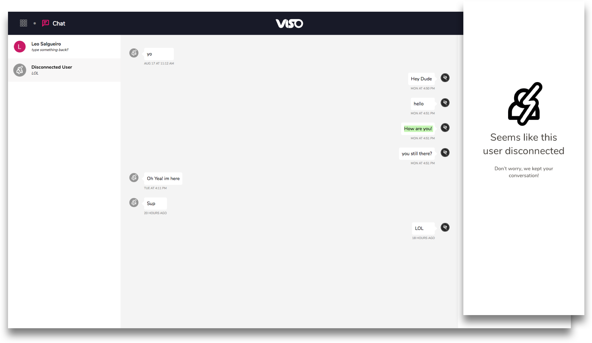
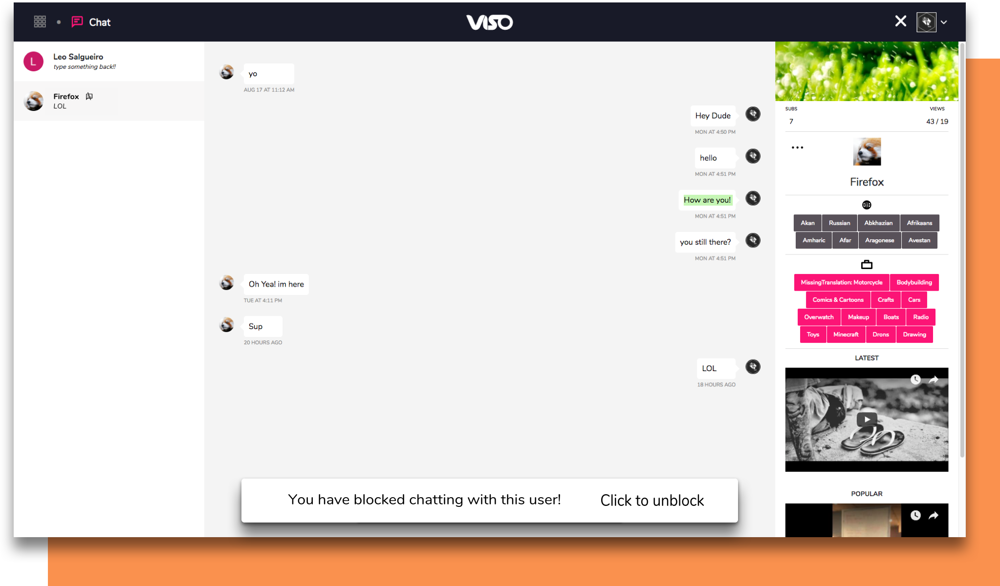

I was one of the designers behind BBTV’s new flagship product, VISO. VISO is a creator platform providing unique tools for Youtubers. I played many roles for this project. I was a key member in conducting user research, user testing, legal compliance, and researching third-party applications. I supported the product team by providing and improving design mocks, especially with chat and support. Finally, I assisted the product owner and marketing team with copy for the product and promotional material.
User research was crucial to not only to understand the users, but also help the team narrow the scope of the project. For user research, the team focused on surveys, domain analysis, and user interviews. I conducted most of the user interviews and also took initiative and talked with random Youtubers filming in the area and picked their brains. Our team also took part in numerous design sprints that further helped determine our user needs.
We dedicated more than 4 weeks of the project to brand exploration. Our team created a set of brand values which set the general tone of the product. Afterwards, we created moodboards to visually capture the feel of the product. Finally, we explored various types, illustration, and language tones and, most importantly, how they will scale in the future.
I was tasked with adding support to the platform utilizing Zendesk Embeddable’s FAB button and making it fit on all the screens. Instead, I asked why have the FAB button. I studied the SDK and found a way to call the widget without the needing the FAB button at all. Working with our amazing developers, we were able to create a subtle support button that calls on the widget.
Instead of re-inventing the wheel, we decided to use an SDK for chat. Working with a developer, we made a comparison list of which SDK to use based on feature and implementation. From this list, we eventually chose Sendbird. Afterwards, the product team began creating the base design for chat. I was then tasked in creating the experience for what happens to conversations when users are blocked and disconnected from VISO.
After reading the Sendbird SDK documentation, I discovered that Sendbird archives all conversations even after a user was deleted for 6 months. Taking advantage of this, we display the archives to users rather than kills the conversation with the disconnected user.
Instead of hiding the conversation, we decided to have a bottom toaster and an icon next to the chat list to show the user block this person. This allowed them to see the why they blocked the other user whilst being able unblock them at any time.
